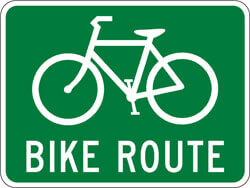
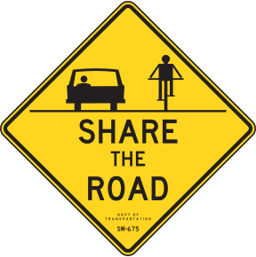
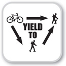

About the MAG Interactive Bikeways Viewer
The MAG Bikeways map shows existing, locally-designated bicycle facilities, and is provided to you by the Maricopa Association
of Governments (MAG). This map has been produced under the direction of the MAG Regional Bicycle
Task Force. Funding was provided by the Federal Highway Administration. If you have any comments,
please call MAG at (602) 254-6300 or visit our web site at
www.azmag.gov.
The Valley Path Brand & Wayfinding Signage Guidelines serve as a technical resource to guide parks and transportation
agencies as they plan, design and implement the brand and wayfinding signage along the off-street
bicycle network in the Phoenix metro area. The Maricopa Association of Governments (MAG) and
member agencies developed this manual in response to requests from the public for better uniformity
and consistency of wayfinding signage throughout the regional off-street bicycle network. For
more information visit
MAG Active-Transportation.
Disclaimer: This map is intended to aid bike riders in choosing routes between locations.
This map is not in any way a warranty or guarantee as to the stability of roadway conditions or the
fitness of listed routes for riding bikes. Many of the routes identified on this map cross or run
along public roads which are exposed to wear and tear and degradation due to weather, traffic, and
other environmental concerns. Riders should remain alert as routes may contain pavement rutting,
cracks, bumps, expansion joints, natural or other debris on pavement surfaces, and vegetation which
may encroach on routes or portions thereof. Riders should also remain alert for areas of visual impairment
and other irregularities that may impact rider and motorist ability to see each other or potential
road hazards. The chance that one may come into an area of visual impairment or a route irregularity
warrants special care on the part of route users.
Government resources limit the capacity to address conditions and irregularities like those described above. Accordingly, route users should maintain a vigilant lookout for these conditions and irregularities. Route users are urged to exercise discretion when choosing where and when to ride based on personal comfort and safety and the comfort and safety of others. Safe route selection includes consideration of motor vehicle, bicycle and pedestrian traffic and roadway or route conditions. MAG does not assume liability for bike riders traveling upon routes shown in this map.
Government resources limit the capacity to address conditions and irregularities like those described above. Accordingly, route users should maintain a vigilant lookout for these conditions and irregularities. Route users are urged to exercise discretion when choosing where and when to ride based on personal comfort and safety and the comfort and safety of others. Safe route selection includes consideration of motor vehicle, bicycle and pedestrian traffic and roadway or route conditions. MAG does not assume liability for bike riders traveling upon routes shown in this map.
 2015 MAG Bikeways Map
2015 MAG Bikeways Map
Contact Page
Bike Safety Tips
Ride Defensively
Prepare for the unexpected and plan alternative maneuvers to avoid conflict. Traffic laws alone do not always protect bicyclists
from injury.
Be Alert. Be Visible. Ride Predictably.
Be Alert. Be Visible. Ride Predictably.
Except while signaling, keep both hands on the handlebars. Always be prepared to stop or make quick turns. Follow lane markings.
Cross railroad tracks at a 90-degree angle.
A bike helmet must fit well and be properly adjusted to do its job of protecting your head. It should fit snugly with the
chin strap fastened. When purchasing a helmet, make sure it is approved by the American National
Standards Institute (ANSI) or the Snell Institute. Helmets should be replaced after the impact
of a collision or even after several years of wear and tear.
When on the road, bicyclists have the same rights and responsibilities as drivers of vehicles. Knowing and following the
rules of the road help all road users properly anticipate and react to each other. See Arizona
Revised Statutes.
(ARS) Sections 28-811 to 28-817 for more information.
Generally used to denote streets that do not have bike lanes, but that are good streets to ride a bike on. These roads usually
have lower speeds and volumes.

May be used to denote routes without designated bicycle lanes, where bikes and cars are expected to share a lane. Drivers
are required by state law to provide at least three feet of separation when passing a bike
rider.

Street Safety Tips
Obey Traffic Signals and Signs
As a vehicle

Ride on the Right
Ride on the right with the flow of traffic. Never ride against traffic on the road
Use Appropriate Lane
Avoid being in a right turn-only lane if you plan to proceed straight through. Move into
the through lane early.
Turning Left -Two Options
1. As a vehicle -signal your intentions in advance. Move to the left turn lane
and complete the turn when safe.
2. As a pedestrian -ride to the far crosswalk and walk across.
2. As a pedestrian -ride to the far crosswalk and walk across.

Beware of Car Doors
Be wary of parked cars. Motorists can unexpectedly open doors. Be sure your bike is a car
door length away from parked cars.

Use Hand Signals
Signal all turns and stops ahead of time. Check over your shoulder
Use Lights at Night
Always use a strong white headlight

Make Eye Contact
Confirm that you are seen. Establish eye contact with motorists to ensure that they know
you are on the road. Share the road in a polite and courteous manner.

Scan the Road Behind
Look over your shoulder to check behind you regularly and use a mirror to monitor traffic.
One Person Per Bike
Riding double is only permitted when carrying a child in an approved carrier or when riding
on a tandem bicycle.
Helmet your Head
Cyclists should always wear a helmet.
Be Courteous
Share the road and the responsibilities. Motorists and cyclists get along much better when
showing courtesy and consideration towards each other.
Earphone Dangers
Never use earphones while riding on the road
Multi-Use Safety Tips

Keep to the Right
All path users must keep to the right except when passing or turning left. Move off the path
to the right when stopping.

Merge Correctly
Look both ways. Yield to through traffic at intersections.

Signal to Others
Cyclists
Respect Nature
Do not disturb or feed wildlife. Keep to well established paths to protect habitats. Do not
collect plant or animal material.

Right-of-Way
Cyclists and in-line skaters must yield to pedestrians. Pedestrians always have the right-ol-way.

Where to Skate
Follow the same rules as cyclists. Ensure your stride does not cross the center of the path.
Control Your Pet
Scottsdale ordinances require pets to be leashed while on the path and owners to clean up
after their pets.

Be Visible
Outfit your bicycle with a headlight
Earphone Dangers
Keep the volume sufficiently low to be able to hear other path users approaching.

Flooded Paths
Many of our paths are in flood channels. Do not enter when water is present.